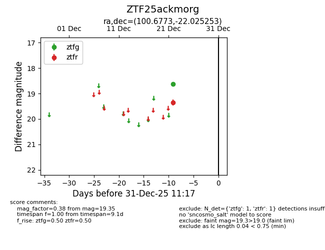
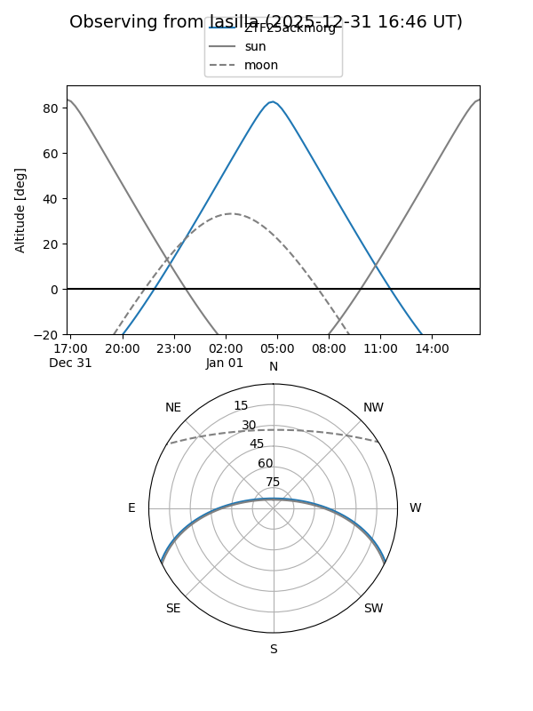
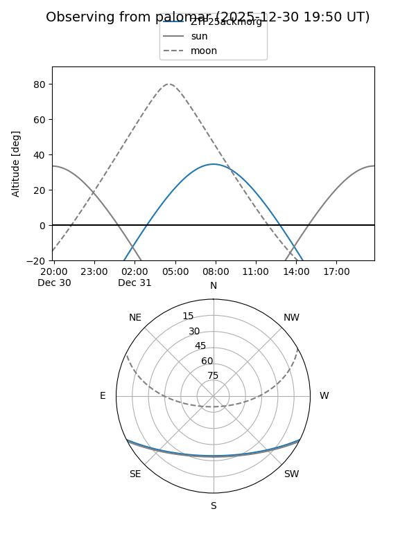

ZTF25ackmorg
Target ZTF25ackmorg at 2025-12-31 18:00
Aliases and brokers:
FINK: link
Lasair: link
ALeRCE: link
alt names
ZTF25ackmorg (ztf,fink_ztf)
Coordinates:
equatorial (ra, dec) = 100.6773,-22.02525
equatorial (HMS+DMS) = 06:42:42.56,-22:01:30.91
galactic (l, b) = (231.8599,-11.67822)
Flags:
Photometry:
last ztfg=18.63, ztfr=19.35
1 ztfg, 1 ztfr detections
Lightcurve

Visibility


Additional plots